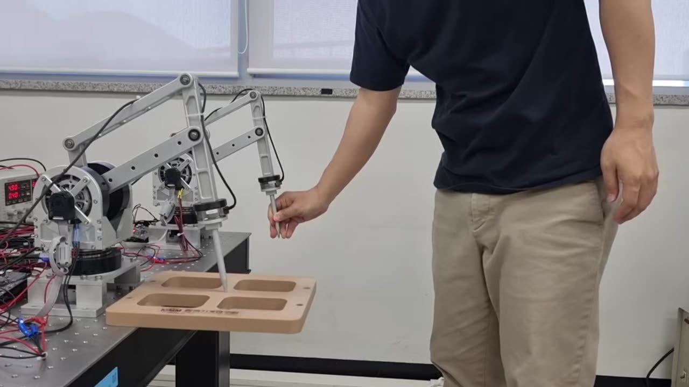
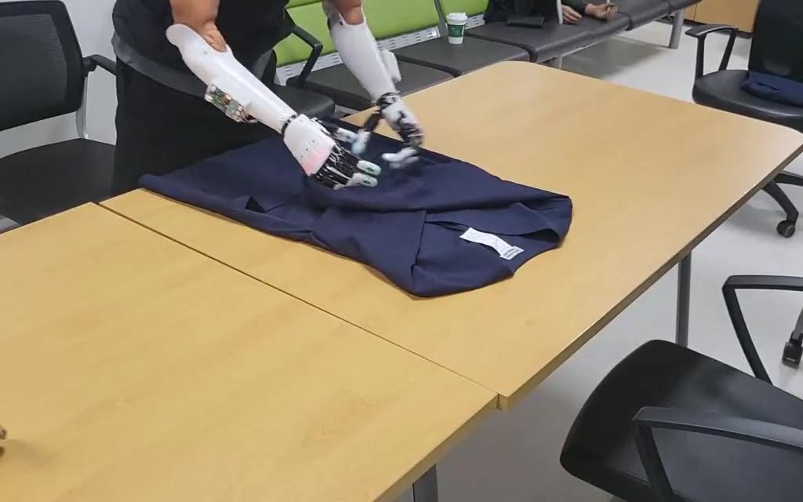

KIMM · UST-KIMM School
Robots that work with people, in physical contact.사람과 맞닿아 함께 일하는 로봇을 연구합니다.
The Interactive Robotics Lab studies physical human-robot interaction (pHRI), in which robots and people exchange force and touch, together with Physical AI and lightweight AI for robot control, and brings that work into medical, rehabilitation, and diagnostic robots.
Interactive Robotics Lab은 사람과 힘·촉감을 주고받는 물리적 인간-로봇 상호작용(pHRI)과 로봇 제어를 위한 Physical AI·경량 AI를 연구하고, 이를 의료·재활·진단 로봇으로 구현합니다.
- pHRI
- Physical AI
- Lightweight AI경량 AI
- Medical Robots의료로봇
We work within the Department of Robot Applications, Daegu-Gyeongbuk Convergence Research Division, Korea Institute of Machinery & Materials (KIMM), and train graduate students through the UST-KIMM School.
한국기계연구원 대경권융합연구본부 로봇응용연구실 안에서 활동하며, UST-KIMM 스쿨을 통해 대학원생을 지도합니다.
Research at a Glance연구 분야
All research →자세히 보기 →
Teleoperation & Haptics원격제어·햅틱
Stable force-feedback teleoperation and learning from demonstration
지연에도 안정적인 힘반향 원격조작과 시연 학습

Image-Guided Surgical Robots영상 가이드 수술·중재 로봇
Needle, catheter, and implant surgery
바늘·카테터 시술과 임플란트 수술

Robotic Prosthetic Hands로봇의수
Lightweight multi-DOF hands for everyday tasks
일상 동작을 돕는 경량 다자유도 의수

Humanoid Robots휴머노이드 로봇
Multi-fingered hands and sim-to-real manipulation
다지 로봇핸드와 sim-to-real 조작

Robotic Blood Sampling로보틱 검체채취와 현장진단
AI vein detection and point-of-care testing
AI 정맥 검출과 현장진단
Lightweight AI for Robot Drives로봇 구동모듈 경량 AI
Fault diagnosis that runs on edge hardware
엣지 하드웨어에서 도는 고장진단
News소식
- Donggyu Youn will present a poster at ICCAS 2026 in Sapporo, Japan (Oct. 27–30), supported by the 2026 2nd UST International Conference Presentation Support Program.윤동규 학생이 2026년 제2차 UST 국제학술발표지원사업의 지원을 받아 ICCAS 2026(일본 삿포로, 10.27–30)에서 포스터를 발표합니다.
- Donggyu Youn will give an oral presentation at USTIC 2026 (Oct. 1–2, DCC, Daejeon).윤동규 학생이 USTIC 2026(10.1–2, 대전컨벤션센터)에서 구두 발표를 합니다.
- A paper first-authored by Donggyu Youn has been published in Scientific Reports (IF 4.9, JCR 14.6%).윤동규 학생이 1저자로 작성한 논문이 Scientific Reports(IF 4.9, JCR 14.6%)에 게재되었습니다.
- Huynh Thanh Lam joined the lab as a Ph.D. student. Welcome!후인탄람 학생이 박사과정으로 연구실에 합류했습니다.
- Donggyu Youn won the Grand Prize (1st place) at the UST-KIMM School Academic Festival.윤동규 학생이 UST-KIMM 스쿨 학술제에서 대상(1위)을 받았습니다.
- Dr. Jang Ho Cho received a Commendation from the Deputy Prime Minister and Minister of Science and ICT for pHRI control and technology transfer in medical robotics.조장호 박사가 의료로봇 분야 인간-로봇 물리적 상호작용 제어와 기술이전 공로로 부총리 겸 과학기술정보통신부 장관 표창을 받았습니다.